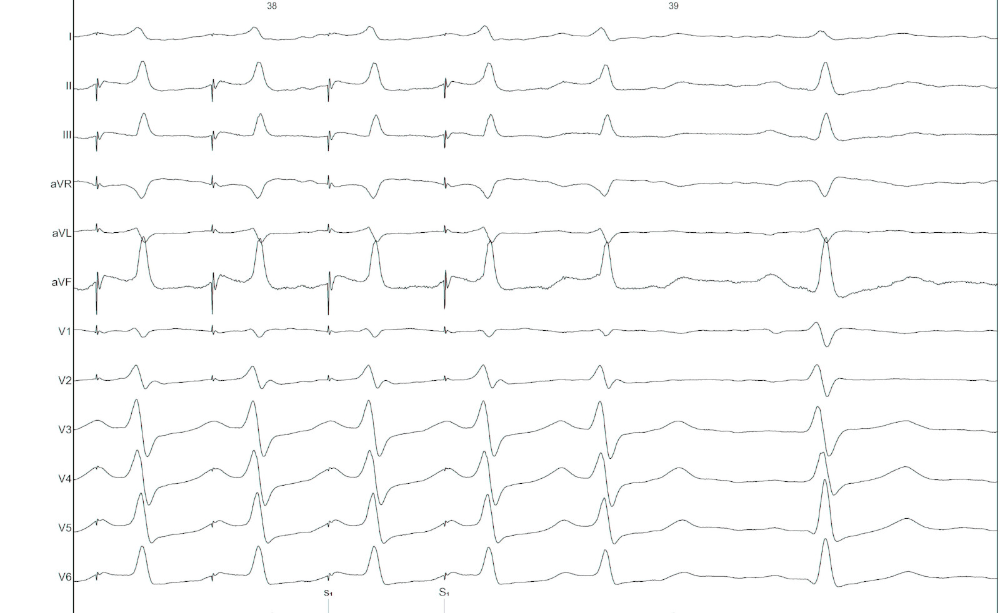

Supraventricular Tachycardia
Raja Selvaraj
Part I - Baseline evaluation (before inducing tachycardia)
Narrow QRS tachycardia
- Regular
- Rate >= 100
- QRSd <= 120
- AT, AVNRT, orthodromic AVRT
History
- Age (at onset)
- Sex
- Neck pulsations
- Onset / offset
ECG
- Long RP / Short RP
- P wave axis
- AV ratio
- ST depression
- QRS alternans
EP study
- Baseline measurements
- Ventricular burst pacing
- Ventricular extrastimuli
- Atrial burst pacing
- Atrial extrastimuli
Ventricular pacing
- Absent VA conduction
- Eccentric atrial activation
- Central atrial activation
Atrial activation
VA conduction - Nodal conduction
- Decremental
- VA dependent on VH
- Blocks with adenosine
- VA time reduces with direct His capture
VA and VH
Parahisian pacing
- Somewhat difficult to perform
- Often difficult to interpret
- Still very useful sometimes
Parahisian pacing - setting up
- His catheter, slightly pushed in (small A)
- Start with low output and increase gradually
- Watch QRS morphology for intermittent His capture
Parahisian pacing - interpretation
- His capture - narrower QRS, His not seen, RVA early
- Beware of atrial capture
- Beware of pure His capture
- Narrower QRS
- Isoelectric interval from pacing spike to QRS
Parahisian pacing - interpretation
- Identify beats with and without His capture
- Look at atrial activation sequence
- Measure VA interval
Parahisian pacing - with His capture
- Nodal conduction - same sequence, shorter VA
- AP conduction - same sequence, same VA
- Mixed response - different sequence, shorter VA
Parahisian pacing

Parahisian

Parahisian
Atrial pacing
- Latent preexcitation
- Dual AV nodal physiology
- PR > RR
- AH jump
PR more than RR

AH jump - 600/430
AH jump - 600/420
AH jump - 600/410
Atrial extrastimulus - Atrioventricular AP
Atrial extrastimulus - Atriofascicular AP
Atrial extrastimulus - Fasciculoventricular AP
Other maneuvers
Response to adenosine
Differential pacing
- VA interval during pacing from apex and base
- Shorter from apex for nodal conduction
- Shorter from base for AP conduction
RV apex pacing

RV base pacing

Part II - Evaluation of tachycardia
Regular narrow QRS tachycardia
- AVNRT
- Orthodromic AVRT
- Atrial tachycardia
Tachycardia induction
- Chamber from which induced
- Induction dependent on critical AH prolongation
- Induction dependent on antegrade AP conduction block
Regular narrow QRS tachycardia
- A/V ratio
- Atrial activation
- VA time
- Ventricular overdrive pacing
Narrow QRS tachycardia, 1:1 VA, eccentric atrial activation

Narrow QRS tachycardia, 1:1 VA, central atrial activation, very short VA
Narrow QRS tachycardia, 1:1 VA, central atrial activation, VA > 70 ms

SVT
Differentiating features

Differentiating features
- Chamber essential to circuit
- Focal / reentry
- Extranodal pathway
- VA linking
- Distance from RV apex
Sequential vs simultaneous activation
RV overdrive pacing - most useful maneuver
- Easy to perform and interpret
- Can distinguish AT from AVNRT / AVRT (VAAV versus VAV)
- Can distinguish between AVNRT / AVRT (cPPI-TCL, SA-VA)
- Onset of entrainment can provide clues
- Can help even if not entrained !
Setting up
- Burst pacing from right ventricle - apex / base
- Sync on
- Tachycardia CL - 30 ms
- Pace until atrium entrained
- Stop pacing
What to look for ?
- Don't 'eyeball'
- Does tachycardia continue ?
- Was the atrium entrained ?
- Which is the last entrained A ?
- Sequence - VAV or VAAV
What to look for ?
- corrected PPI - TCL
- SA - VA
- Is there fusion during entrainment ?
- Beginning of entrainment - A or His ?
- How many beats to entrain ?
RV pacing in narrow QRS tachycardia - Rule out (or in) AT

RV pacing in narrow QRS tachycardia - Rule out (or in) AT
RV pacing in narrow QRS tachycardia.
Why all this fuss about measurement ?

RV pacing in AT - VAAV
RV pacing in narrow QRS tachycardia - AVNRT / AVRT
SA / VA intervals
Fusion during entrainment ?

Entrainment
Beginning of entrainment can give a clue

- Atrial acceleration in transition zone
- A entrainment before H entrainment
Could not entrain - useful information ?

Summary
- VAAV identifies AT, VAV rules out
- SA - VA and PPI - TCL are longer for AVNRT
- Can use basal pacing if responses are equivocal
- A entrained earlier for AVRT, entrained before His
His refractory PVC
- Little more difficult to perform and interpret
- Very useful maneuver
- Especially differentiate septal AP from AVNRT
His refractory PVC - setting up
- R synchronised single extrastimuli
- Check that sync is working
- Start 30 ms less than RR
- Decrement by 10 ms
- Continue until refractoriness or tachycardia termination
His refractory PVC - measurement and interpretation
- Confirm cycle length is stable
- Measure AA around each PVC to find longest CI at which PVC preexcites A
- Decide if His is refractory at this time
His refractory PVCs - responses
- Advance atrial activation without change in sequence
- Delay atrial activation without change in sequence
- Terminate tachycardia without conduction to atrium
- Does not alter atrial activation
PVC during tachycardia
PVC terminates tachycardia

Other clues during narrow QRS tachycardia
- VA unlinking - spontaneous or after atrial burst
- Cycle length and VA changes with bundle branch block
- Spontaneous termination
Spontaneous termination
Bundle branch block
Bundle branch block
Bundle branch block

Parahisian
Parahisian
Pre-ablation

Post ablation
Summary
- Understanding of basic electrophysiology of arrhythmias
- Practice is important
- Although not required at most time, will prove critical in select cases